install.packages(c("ggplot2","ggridges"))Practical 3 - Smoothing and Density Estimation
Introduction
This practical is designed to enhance your understanding of smoothing and density estimation techniques.
By the end of the lab, you will have acquired the following skills:
-
Smoothing a data set to extract a smooth trend using
ksmoothandloess -
Add curves to a plot using the
linesfunction, and shaded regions usingpolygon - Add a smooth trend and confidence interval to a scatterplot
-
Estimate a smooth density function of a single variable using the
densityfunction. - Add smooth densities to histograms, and draw violin plots and ridgeline plots
You will need to install the following packages:
ggplot2for the violin plotggridgesfor the ridgeline plot
Smoothing - recap
Smoothing is a very powerful technique used all across data analysis. Other names given to this technique are curve fitting and low pass filtering. It is designed to detect trends in the presence of noisy data where the shape of the trend is unknown. The smoothing name comes from the fact that to accomplish this feat, we assume that the trend is smooth, as in a smooth surface. In contrast, the noise, or deviation from the trend, is unpredictably wobbly. The justification for this is that conditional expectations or probabilities can be thought of as trends of unknown shapes that we need to estimate in the presence of uncertainty.
Download data: UN
The data we’ll use to explore smoothing is the UN data set comprising various measures of national statistics on health, welfare, and education for 213 countries and other areas from 2009-2011, as reported by the UN. Let’s consider the relationship between the wealth of the country (as measured by the GDP per person, in 1000s US dollars) and infant mortality (defined as deaths by age 1 year per 1000 live births).
plot(x=UN$ppgdp, y=UN$infantMortality, xlab="GDP", ylab="Infant Mortality", pch=16)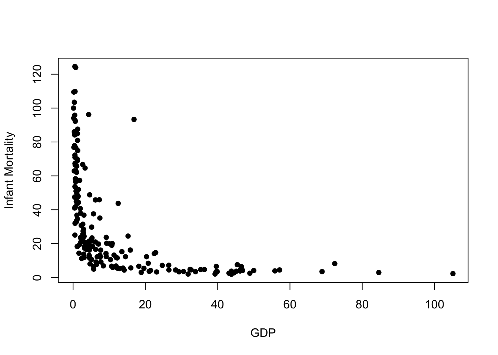
We quite clearly see a strong relationship here, but it is far from linear. Poorer countries have higher levels of infant mortality, and wealthier countries have lower mortality rates. We also seee that beyond a point, further increases in GDP do not result in further reduction in mortality, and similarly the very poor countries have higher, and much more variable, infant mortality rates. We also notice one possible outlier with a very high infant mortality compared to other countries of similar GDP (this turns out to be Equatorial Guinea).
Exercise 1 (Moving averages)
The general idea of a moving average is to group data points into a local neighbourhood in which the value of the trend is assumed to be constant, which we estimate by the average of these nearby points. Then as we move along the x-axis, our neighbourhood and hence the estimate of the trend will change.
To fit a moving average, we use the ksmooth function using a "box" kernel and a bandwidth to govern the size of the neighbourhood as follows:
fit <- ksmooth(x=UN$ppgdp, y=UN$infantMortality, kernel = "box", bandwidth = 5)The object we’ve created is a list with components x and y corresponding to our estimates of the smooth trend (y) at the corresponding values of GDP (x). We now just need to add this to our plot.
We can use R’s line drawing functions to add curves to a plot via the lines function, which takes a vector of x and y values and draws straight-line segments connecting then on top of the current plot.
Let’s add our moving average trend to the scatterplot
plot(x=UN$ppgdp, y=UN$infantMortality, xlab="GDP", ylab="Infant Mortality", pch=16, col="gray")
lines(x=fit$x, y=fit$y, col="red", lwd=3)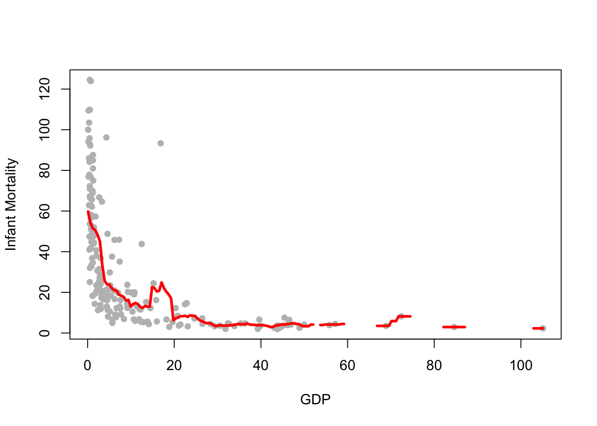
While it mostly follows the shape of the data, there are some obvious issues:
- The trend is still quite noisy, and not quite the smooth curve we might expect
- There are gaps in the trend - this is where our data points are so far apart that we have no data points in the neighbourhood to produce an average
- The moving average is very sensitive to extremes and outliers. Notice how the trend is ‘pulled upwards’ by a few large mortality values at the left of the plot.
Task 1a
- Repeat the commands above but increase the bandwidth
- Add your new smooth trend to the plot using a different colour of line.
- How does the outlier affect the shape of the line?
Click for solution
Here’s a comparison with a smooth of bandwidth 15:
fitlarge <- ksmooth(x=UN$ppgdp, y=UN$infantMortality, kernel = "box", bandwidth = 15)
plot(x=UN$ppgdp, y=UN$infantMortality, xlab="GDP", ylab="Infant Mortality", pch=16, col="gray")
lines(x=fit$x, y=fit$y, col="red", lwd=3)
lines(x=fitlarge$x, y=fitlarge$y, col="blue", lwd=3)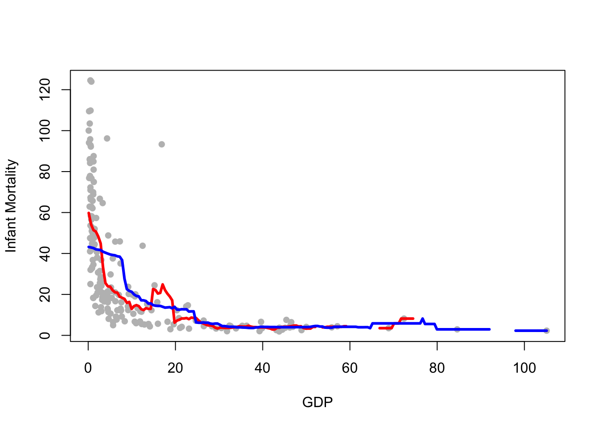
Kernels
Kernel smoothers replace a moving average of nearby points with a weighted average of all the data, with nearer points having more contribution than more distant points.
We can fit the kernel smoother using the same ksmooth function, but now we must change the kernel argument. This smoother only supports the normal (Gaussian) or box (Uniform) kernel functions.
fit <- ksmooth(x=UN$ppgdp, y=UN$infantMortality, kernel = "normal", bandwidth = 5)
plot(x=UN$ppgdp, y=UN$infantMortality, xlab="GDP", ylab="Infant Mortality", pch=16, col="gray")
lines(x=fit$x, y=fit$y, col="red", lwd=3)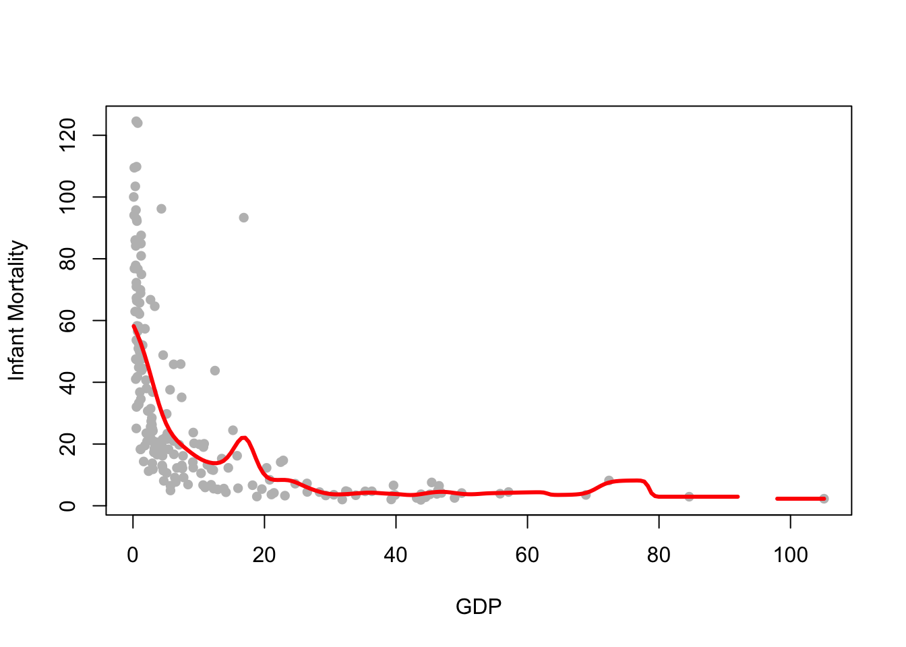
We can see a number of notable changes here:
- The trend is much smoother
- We still have a gap where our data are sparse - the bandwidth is still too small
- There is a bump in the trend near the outlier we identified earlier, and a bump around
GDP=75where our data are sparse and influenced by one larger value
Overall, this looks to be doing a better job, but still rather susceptible to extreme values.
If we want to implement a different kernel function, we can either use some extra package or do it manually. In theory, the Epanechnikov kernel is the optimal one: here’s code to define this kernel function:
K_epa <- function(u){0.75 * (1 - u^2) * (abs(u) <= 1)}We can plot this function, to make sure that it has the expected shape
u <- seq(-1.5, 1.5, length = 400)
plot(u, K_epa(u), type = "l", lwd = 2,
xlab = "u = (x - x_i) / h",
ylab = "K(u)",
main = "Epanechnikov Kernel Function")
abline(h = 0, lty = 2)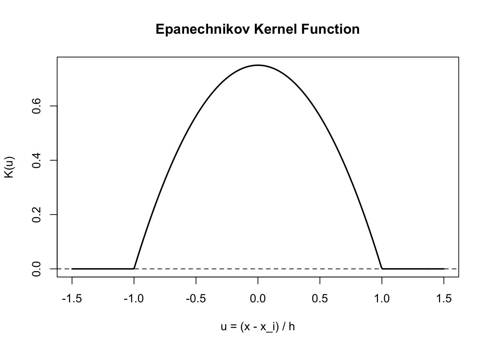
Task 1b
-
Use
K_epato create a manual Epanechnikov smoothing on the plot ofppgdpversusinfantMortality. You can choose a bandwidth yourself, or create a function that allows for different choices of bandwidth - Try your smoothing with different bandwidths and compare your results
- Which of the following has a bigger effect on the smoothing: the choice of kernel or the choice of bandwidth?
Click for solution
Recall from lecture that the kernel smoother of \((x_1,y_1), \dots,(x_n,y_n)\) at \(x_0\) is defined as: \[\hat{f}(x_0)= \sum_{i=1}^n w_i(x_0) y_i\]
and that the weigths are defined in terms of the Kernel function as \[w_i(x;h)=\frac{K\left(\frac{x-x_i}{h}\right)}{\sum\nolimits_{i=1}^nK\left(\frac{x-x_i}{h}\right)}.\] We can use this to create our kernel smoother
epa_smooth <- function(x, y, xi, h) {
u <- (x - xi) / h
sum(K_epa(u) * y) / sum(K_epa(u))
}and we can then fit it to our data
h <- 5 #Here you choose your bandwidth
x <- UN$ppgdp
y <- UN$infantMortality
ord <- order(x) #Remember to order your x values, or the line is going to look messy!
x <- x[ord]
y <- y[ord]
x_grid <- x
y_epa <- sapply(x_grid, function(x0) epa_smooth(x, y, x0, h))
plot(x=UN$ppgdp, y=UN$infantMortality, xlab="GDP", ylab="Infant Mortality", pch=16, col="gray")
lines(x_grid, y_epa, lwd = 2, col = "purple")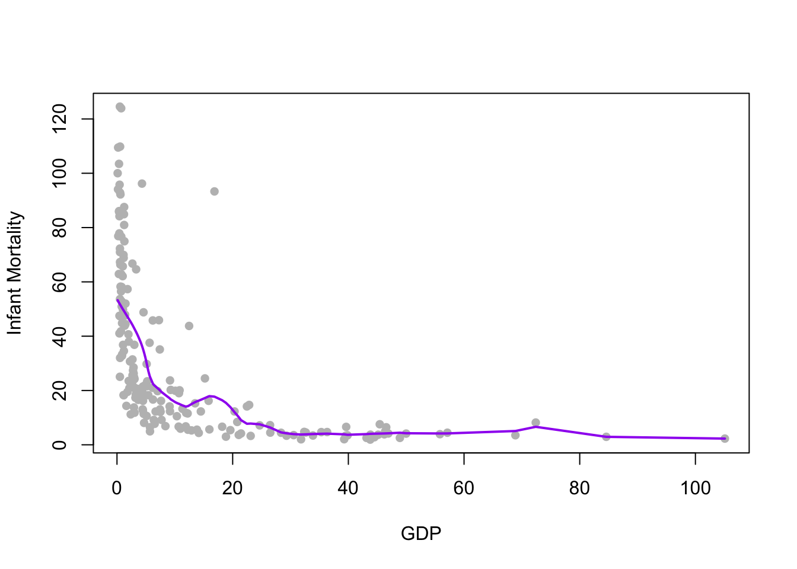
ksmooth function doesn’t support many different kernels!)
Local regression and Loess
Local regression methods work in a similar way to our kernel smoother above, only instead of estimating the trend by a local mean weighting by nearby data we fit a linear regression using a similar weighting. We typically need to use a much larger bandwidth to have enough points to adequately estimate the regression line, but the results are generally closer to a more stable and smooth trend function.
The technique we have looked at is achieved using the loess function, which takes a span argument to represent the proportion of the entire data set used to estimate the trend. This span plays the same role as the bandwidth parameter does.
It’s a little more work to add the loess smoother to our plots, as we must separately fit the model and then predict the trend at some new locations (the ksmooth did both jobs for us). However,
## fit the model, using 2/3 of the data
lfit <- loess(infantMortality~ppgdp, data=UN, span=0.66)
## create a sequence of points to cover the x-axis
xs <- seq(min(UN$ppgdp), max(UN$ppgdp), length=200)
## get the predicted trend at the new locations, and the error too
lpred <- predict(lfit, data.frame(ppgdp=xs), se = TRUE)
## redraw the plot
plot(x=UN$ppgdp, y=UN$infantMortality, xlab="GDP", ylab="Infant Mortality", pch=16)
## add the loess prediction
lines(x=xs, y=lpred$fit, col='red',lwd=4) We see the loess curve is much smoother and better behaved, however it is still influenced by the outliers in the data.
Since the loess curve is built upon ideas of regression, we can use regression theory to extact confidence intervals for our loess trend. The predict function here returns a list with many elements. We have used fit to get the predicted trend lines, but we can use the se.fit component to build an approximate confidence interval.
To do this, we’ll create a vector for the upper and lower limits of the confidence interval and use lines to add these limits to our plot:
upr <- lpred$fit + 1.96*lpred$se.fit ## upper limit of 95% CI
lwr <- lpred$fit - 1.96*lpred$se.fit ## lower limit of 95% CI
plot(x=UN$ppgdp, y=UN$infantMortality, xlab="GDP", ylab="Infant Mortality", pch=16)
lines(x=xs, y=lpred$fit,col='red',lwd=4)
lines(x=xs, y=upr,col='red',lwd=1, lty=2)
lines(x=xs, y=lwr,col='red',lwd=1, lty=2)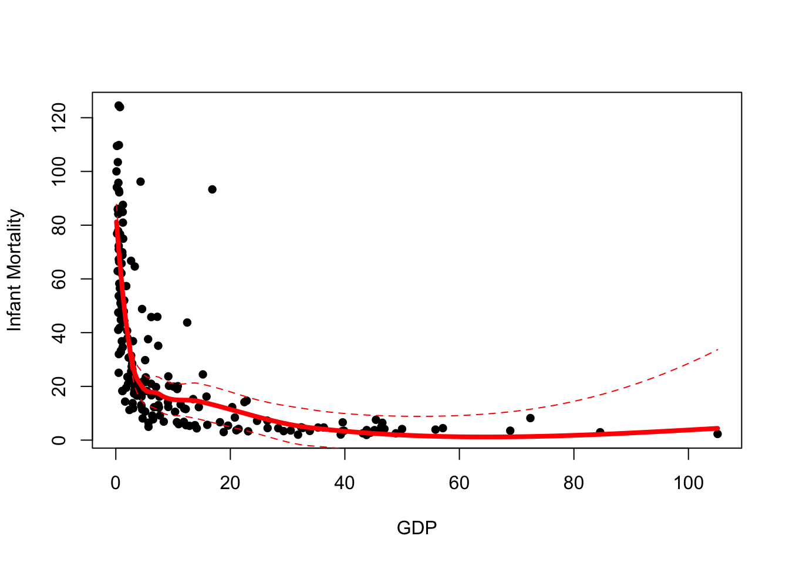
A couple of things to note here:
- These confidence intervals are intervals for the location of the trend, not for the data. We do not expect most of our data to be between these limits.
- Notice how our uncertainty grows to the right of the plot where we have fewest data.
A nicer way to represent the confidence interval is by using a shaded region.
Task 1c
-
Familiarize yourself with the function
polygon, in particular look at the type of input that this function takes, and at how to set optionscolandborder - Using the upper and lower limits for the confidence intervals computed above, construct a polygon corresponding to the confidence region
- Add a shaded colour to the polygon and remove the border, in such a way to get a nice visualisation of the confidence interval as a shaded region
Click for solution
The polygon function can be used to draw shaded regions on an existing plot. The default syntax is:
polygon(x, y, col=NA, border=NULL)
- The
xandyarguments take the \((x,y)\) coordinates of the shape to draw. - The default for
colour draws no fill, so it is advisable to set a colour here. - The default
borderoutlines the region with a black solid line. To disable the border, set this toNA.
We can use our confidence limits to draw the polygon, however we need to combine the points before calling polygon.
plot(x=UN$ppgdp, y=UN$infantMortality, xlab="GDP", ylab="Infant Mortality", pch=16)
lines(x=xs, y=lpred$fit,col='red',lwd=4)
## we need 'scales' to use the alpha function for transparency
library(scales)
polygon(x=c(xs,rev(xs)),
y=c(upr,rev(lwr)), col=alpha('red',0.2), border=NA)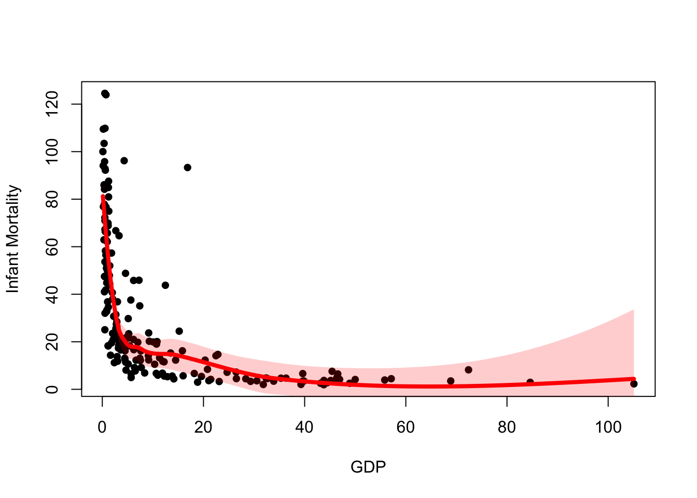
y as c(upr,rev(lwr)), i.e. the upper CI followed by the reversed lower CI. This is because polygon joins successive points together, so we must reverse the order of one of the vectors so we can draw around the shape correctly.
Exercise 2 (Academic salaries)
Download data: Salaries
The Salaries data set contains the 2008-09 nine-month academic salary for Assistant Professors, Associate Professors and Professors in a University in the USA. The data were collected as part of the on-going effort of the college’s administration to monitor salary differences between male and female faculty members. Let’s take a look at two variables in particular - salary, and yrs.since.phd - the number of years since they completed their PhD, as a measure of “experience”. Let’s take a look at the data.
Task 2a
-
Familiarize yourself with the dataset, then draw a scatterplot of the
yrs.since.phdandsalary, withsalaryon the vertical axis. - What do you conclude about the relationship? Does it agree with what you expected?
- Choose two types of smoother among those seen above and add them to your plot as a different coloured lines. Experiment with different bandwidth values and spans. How do your different smoothers compare?
Click for solution
plot(x=Salaries$yrs.since.phd, y=Salaries$salary,pch=16)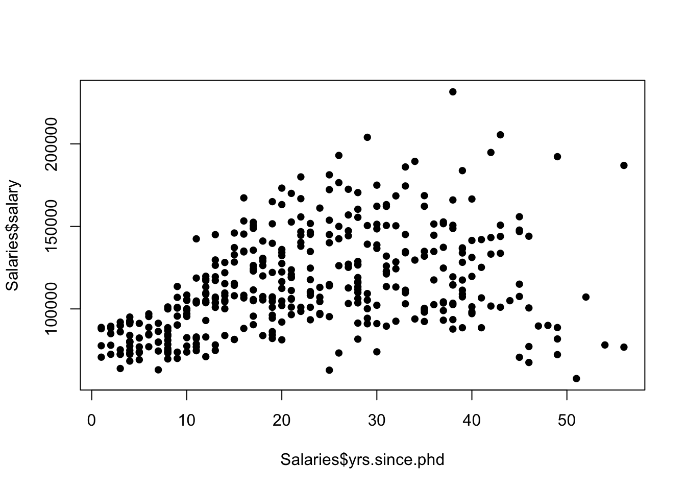
Salary increases with experience, but appears to drop off at high values of experience (seems odd). Recall that this is “years since PhD”, so anyone with 50+ years since PhD is probably age 75+, these are possibly semi-retired senior professors. Let us now fit a moving average smoother
fit <- ksmooth(x=Salaries$yrs.since.phd, y=Salaries$salary,
kernel = "box", bandwidth = 10)
plot(x=Salaries$yrs.since.phd, y=Salaries$salary,pch=16)
lines(x=fit$x, y=fit$y, col="red", lwd=3)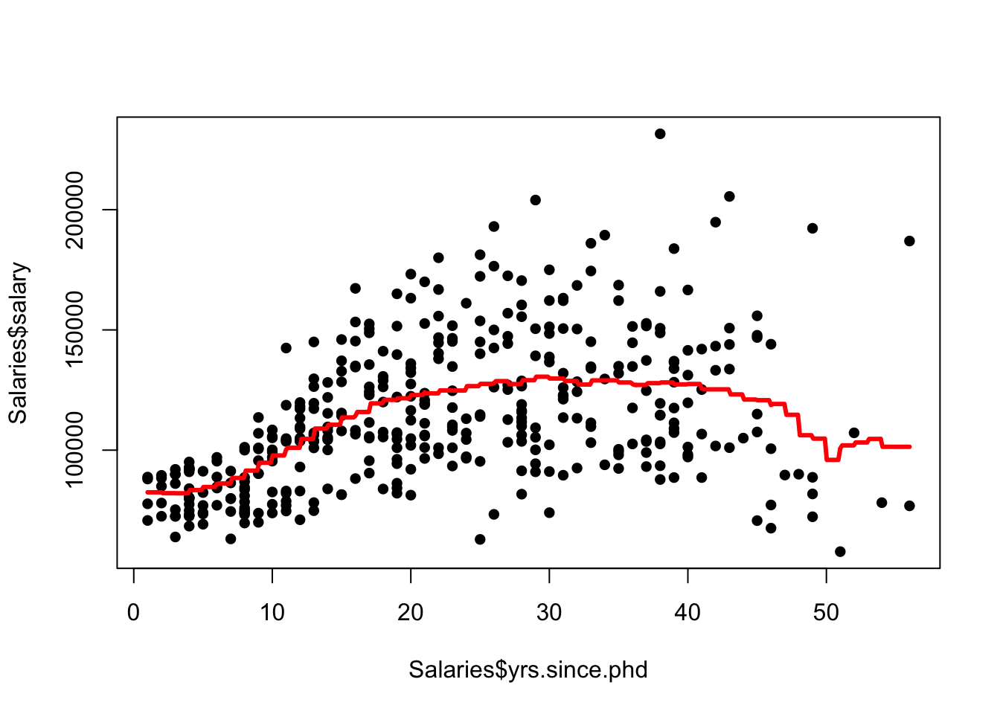
a kernel smoother
fit <- ksmooth(x=Salaries$yrs.since.phd, y=Salaries$salary,
kernel = "normal", bandwidth = 10)
plot(x=Salaries$yrs.since.phd, y=Salaries$salary,pch=16)
lines(x=fit$x, y=fit$y, col="blue", lwd=3)
and a LOESS smoother
lfit <- loess(salary~yrs.since.phd, data=Salaries, span=0.66)
## create a sequence of points to cover the x-axis
xs <- seq(min(Salaries$yrs.since.phd), max(Salaries$yrs.since.phd), length=200)
## get the predicted trend at the new locations, and the error too
lpred <- predict(lfit, data.frame(yrs.since.phd=xs), se = TRUE)
## add the loess prediction
plot(x=Salaries$yrs.since.phd, y=Salaries$salary,pch=16)
lines(x=xs, y=lpred$fit, col='green',lwd=4) 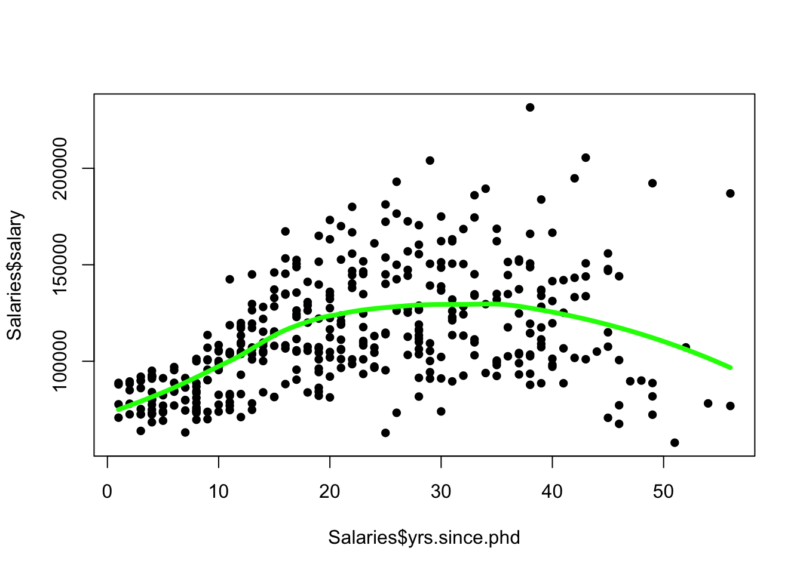
Task 2b
- Redraw the scatterplot, and add your loess curve as a solid line.
- Follow the steps above to add the confidence interval to your plot - either as curves, or as a shaded area, or both!
-
Use
lmto fit a simple linear regression of the formsalary~yrs.since.phd, and add this to the plot. Is this consistent with your smoothed trend and its confidence interval?
Click for solution
Let us redraw both the plot and the LOESS smoother, adding confidence interval as a shaded region
plot(x=Salaries$yrs.since.phd, y=Salaries$salary,pch=16)
lines(x=xs, y=lpred$fit, col='green',lwd=4)
## confidence limits
upr <- lpred$fit + 1.96*lpred$se.fit
lwr <- lpred$fit - 1.96*lpred$se.fit
## draw the shape
polygon(x=c(xs,rev(xs)),
y=c(upr,rev(lwr)),
col=alpha('green',0.2), border=NA)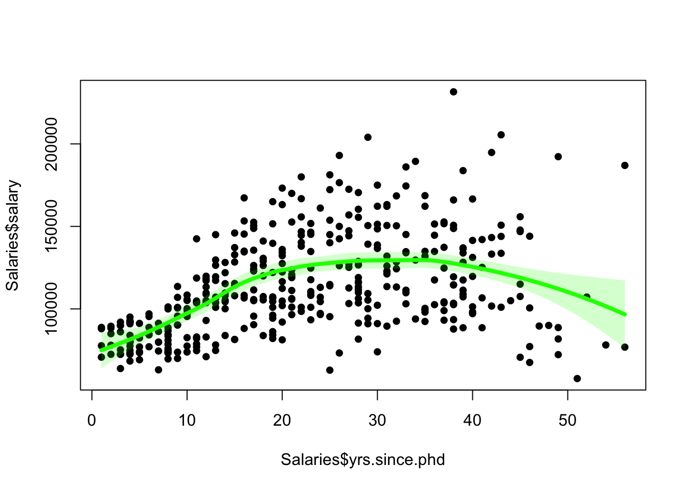
The relationship is not linear, but let us look at the straight line fit anyway
lmfit <- lm(salary~yrs.since.phd, data=Salaries)
plot(x=Salaries$yrs.since.phd, y=Salaries$salary,pch=16)
lines(x=xs, y=lpred$fit, col='green',lwd=4)
abline(lmfit,col='orange')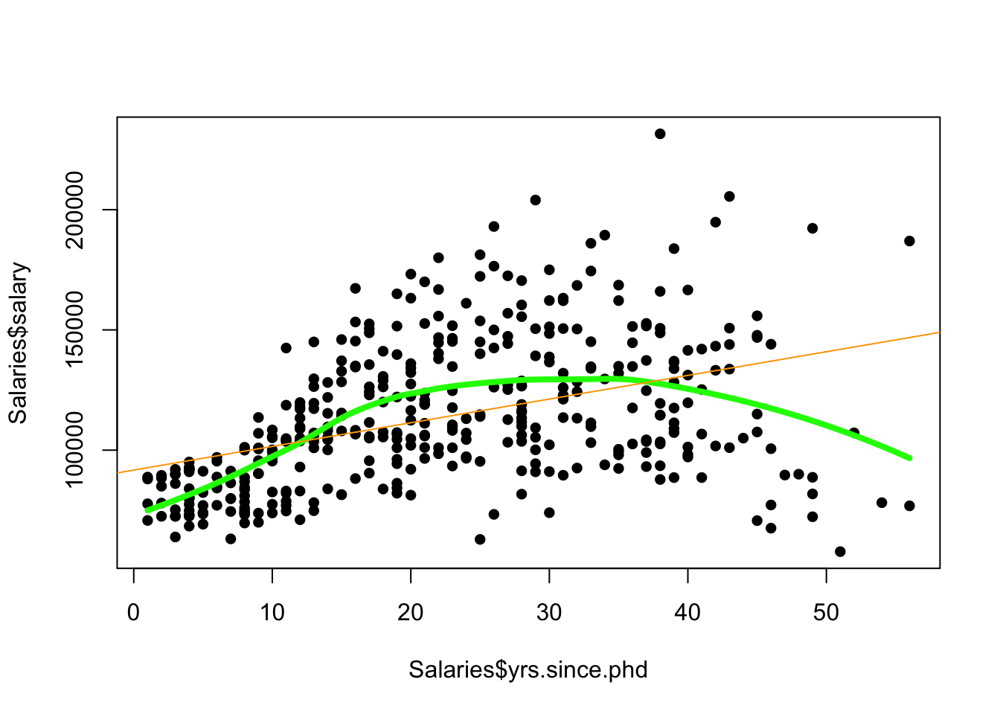
There are a couple of categorical variables in this data set - the sex of the academic, and their rank - one of Prof, AssocProf or AsstProf representing Professor, Associate Professor, and Assistant Professor (in descending order of seniority).
Task 2c
- Use colour to highlight the different sexes. What features can you see?
- Use colour to highlight the different ranks - what do you see?
- What do you think about your trend now?
Click for solution
plot(x=Salaries$yrs.since.phd, y=Salaries$salary,pch=16,col=Salaries$sex)
## red=male, black=female
legend(x='topright', legend=levels(Salaries$sex), pch=16, col=1:2)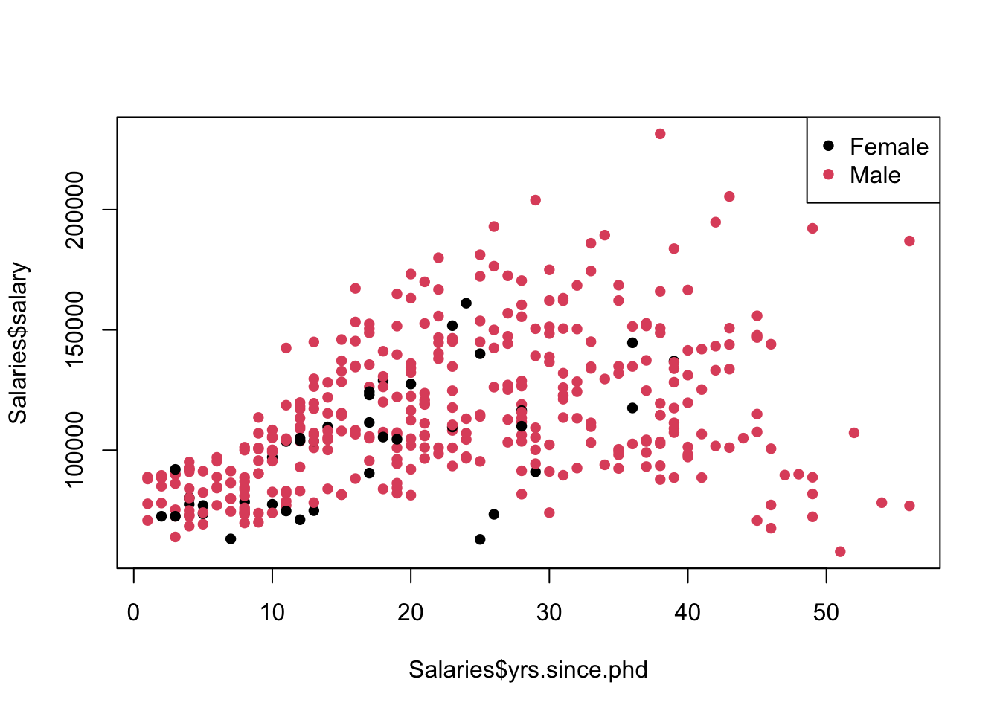
The legend function can add the colour and labels and save us having to decipher that female academics are younger (fewer years of experience), and seemingly less well paid.
plot(x=Salaries$yrs.since.phd, y=Salaries$salary,pch=16,col=Salaries$rank)
legend(x='topright', legend=levels(Salaries$rank), pch=16, col=1:nlevels(Salaries$rank))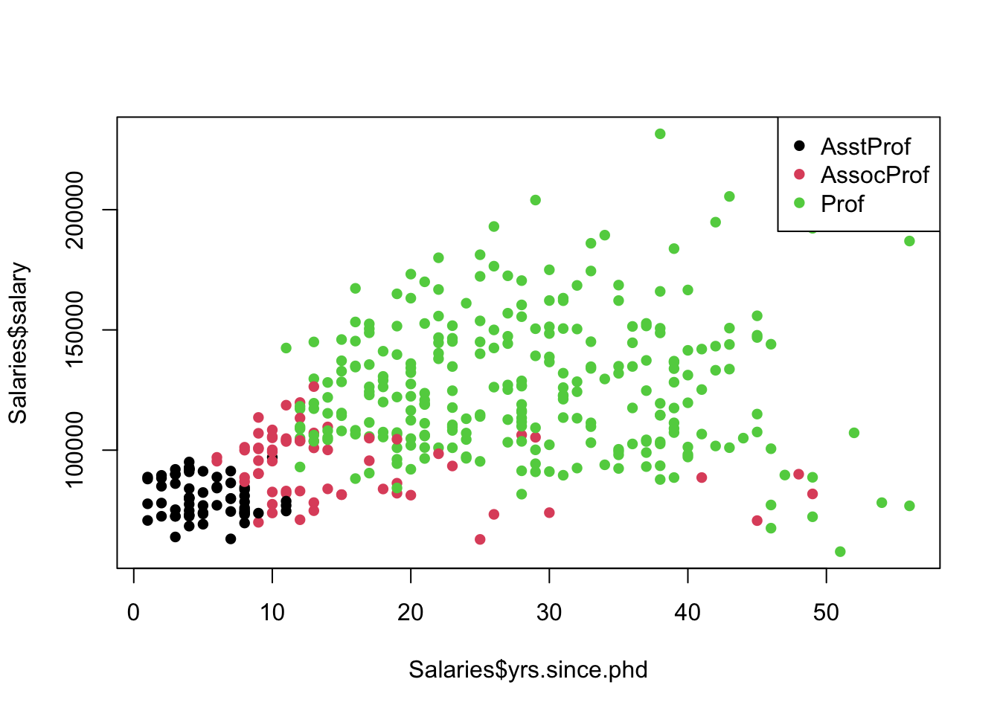
This plot changes everything! It looks strongly like salary just changes with the job rank. For the lower ranks, the relationship appears flat. Though there is some curvature in the Professor group.
As a little extra, we can use a for loop to fit and draw a LOESS curve for each subgroup
plot(x=Salaries$yrs.since.phd, y=Salaries$salary,pch=16,col=Salaries$rank)
legend(x='topright', legend=levels(Salaries$rank), pch=16, col=1:nlevels(Salaries$rank))
## loop over each salary level
for(i in 1:nlevels(Salaries$rank)){
r <- levels(Salaries$rank)[i] ## extract the factor label
## fit a loess on the subset of the data
tmp <- loess(salary~yrs.since.phd, data=Salaries[Salaries$rank==r,], span=0.66)
## and extract and plot
prd <- predict(tmp, data.frame(yrs.since.phd=xs), se = TRUE)
lines(x=xs, y=prd$fit, col=i,lwd=4)
}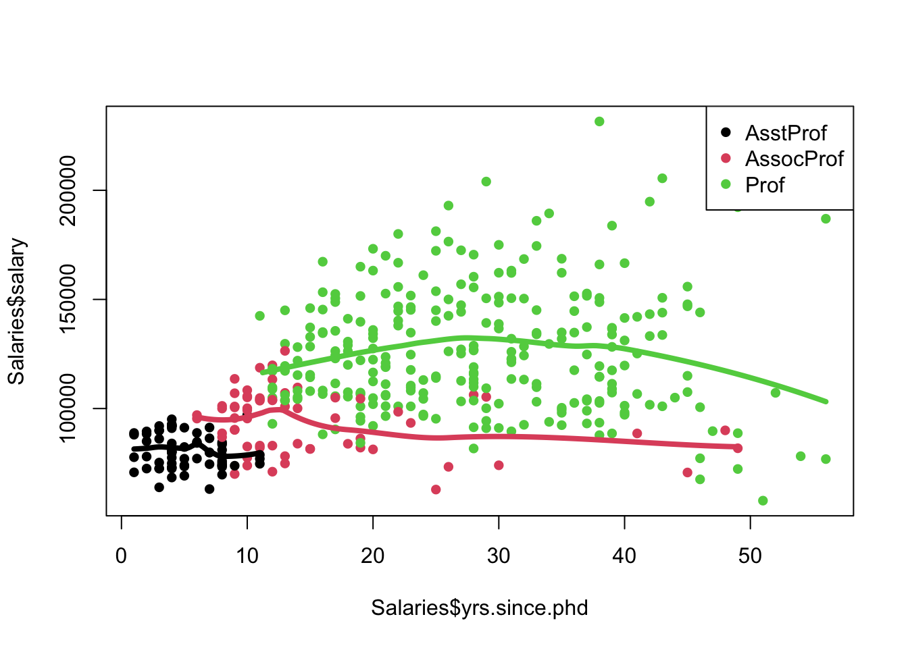
Density Estimation
Kernel density estimation (KDE) is a nonparametric method which uses kernels (as we’ve seen above) to estimate the probability density function of a continuous random variable. In simpler words, we are trying to produce a smoothed version of a histogram.
A density estimate is relatively easy to construct using the density function in R. It takes a few useful arguments:
x- the databw- the bandwidth parameter. If not specified, R will try and determine a value for itself.kernel- the kernel function to use. Options includegaussian,rectangular,triangular,epanechnikov. Default isgaussian.
It then spits out an object with x and y components that we can plot or add to a plot with lines.
## draw a histogram of GDP on density scale
hist(UN$ppgdp, freq=FALSE,main='',xlab='GDP')
## add a rugplot to see where the points lie
rug(UN$ppgdp)
## a density estimate with Gaussian kernel and bandwidth of 5
d1 <- density(UN$ppgdp, bw=5)
lines(x=d1$x, y=d1$y, col='red', lwd=2)
## bandwidth of 10
d2 <- density(UN$ppgdp, bw=10)
lines(x=d2$x, y=d2$y, col='green', lwd=2)
## bandwidth of 2
d3 <- density(UN$ppgdp, bw=2)
lines(x=d3$x, y=d3$y, col='blue', lwd=2)
## let R choose a bandwidth
d4 <- density(UN$ppgdp)
lines(x=d4$x, y=d4$y, col='orange', lwd=2)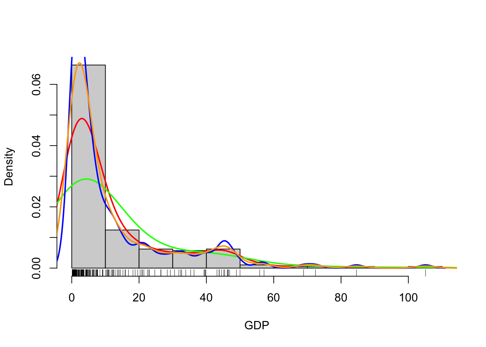
R does a reasonable job at guessing a not-too-stupid bandwidth parameter. To estimate the bandwidth, R calls the bw.nrd0 function on the data - read the help file if you want to know more.
Alternatively, we could skip the histogram altogether and just draw the density estimate:
## draw the line
plot(x=d4$x, y=d4$y,xlab='GDP',ylab='Density',ty='l')
## and add some fill to make it prettier
polygon(x=d4$x, y=d4$y, border=NA, col=alpha('red',0.4)) 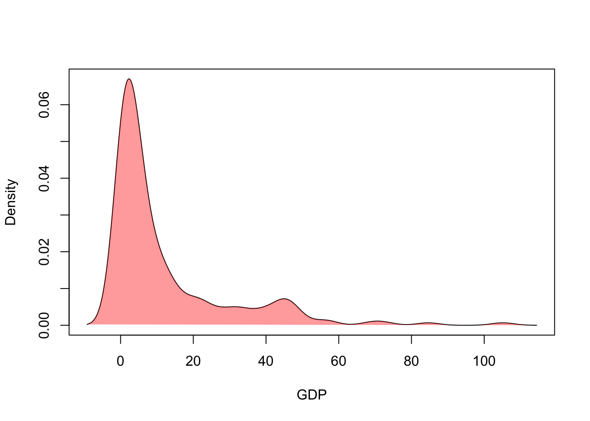
This can be a helpful tool for comparing the densities from different groups in a single plot.
Violin plots
The violin plot is a combination of ideas of a boxplot and the kernel density estimate above. Rather than drawing the crude box-and-whiskers of a boxplot, we instead draw a back-to-back density estimate.
Download data: chickwts
To illustrate, this consider the chickwts data set, which records the weight of 71 chicks fed on a six different feed supplements. Newly-hatched chicks were randomly allocated into six groups, and each group was given a different feed supplement. They were then weighed after six weeks. A separate boxplot can be drawn for each level of a categorical variable using the following code (not again the use of the linear model formula notation)
boxplot(weight~feed,data=chickwts)
A violin plot takes the same layout of the boxplot, but draws a (heavily) smoothed density estimate instead of the box and whiskers.
library(ggplot2)
ggplot(chickwts,
aes(x = factor(feed), y = weight)) +
geom_violin(fill = "lightBlue", color = "#473e2c", adjust=0.5) +
labs(x = "Feed Supplement", y = "Chick Weight (g)")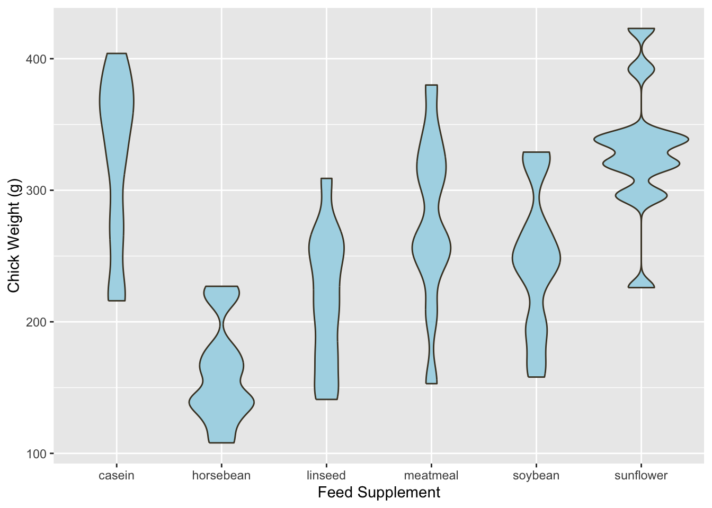
Violin plots can be quite effective at conveying the information of both a histogram and a boxplot in one graphic. As with most density estimates, experimenting with the bandwidth is usually a good idea - in this case the adjust parameter.
Finally, the plotting code for making a violin plot is a lot more involved than usual! ggplot is a powerful, but alternative, method of plotting in R. We’ve generally avoided it as it uses a fundamentally different plotting system to our regular graphics and takes rather more work to understand. However, it is exceptionally flexible and with it you can do many things that would be difficult otherwise, for instance:
library(ggplot2)
ggplot(chickwts,
aes(x = factor(feed), y = weight)) +
geom_violin(fill = "lightBlue", color = "#473e2c", adjust=0.5) +
labs(x = "Feed Supplement", y = "Chick Weight (g)") +
geom_boxplot(width=0.1)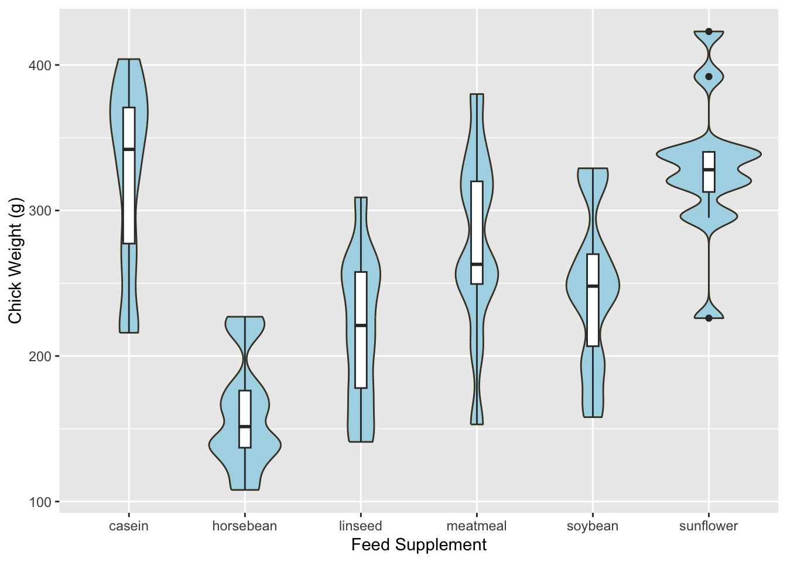
Ridgeline plots
Ridgeline plots, also called ridge plots, are another way to show density estimates for a number of groups. Much like the violin plot, we draw a separate density estimate for each group, but in the ridge line plot, the densities are stacked vertically to look like a line of hills or ridges (hence the name).
Again, this uses the gg family of plotting functions, but can easily be adapted. The main control parameter here is the scale which affects the height of the individual densities:
library(ggridges)
ggplot(chickwts, aes(weight, y=factor(feed), fill=feed)) +
geom_density_ridges(scale = 1.5)
Exercise 3 (Diamond Prices)
Download data: diamonds
The diamonds data set contains information on the prices and other attributes of 53,940 diamonds. In particular, it gives the weight (carat) and price of each diamond, as well as categorical variables representing the quality of the cut (Fair, Good, Very Good, Premium, Ideal), the diamond color (from D=best, to J=worst), and clarity representing how clear the diamond is (I1 (worst), SI2, SI1, VS2, VS1, VVS2, VVS1, IF (best)).
Task 3a
-
Explore the distribution of the
caratof the diamonds. Start with a histogram and experiment with different numbers of bars. - Now make some density estimates and experiment with different bandwidths to produce a smoothed version of your histogram. Add these to your plot.
- Do the same as above for the distribution of prices.
Click for solution
It is OK to try a few histograms before finding one that works
hist(diamonds$carat,breaks=100,freq=FALSE)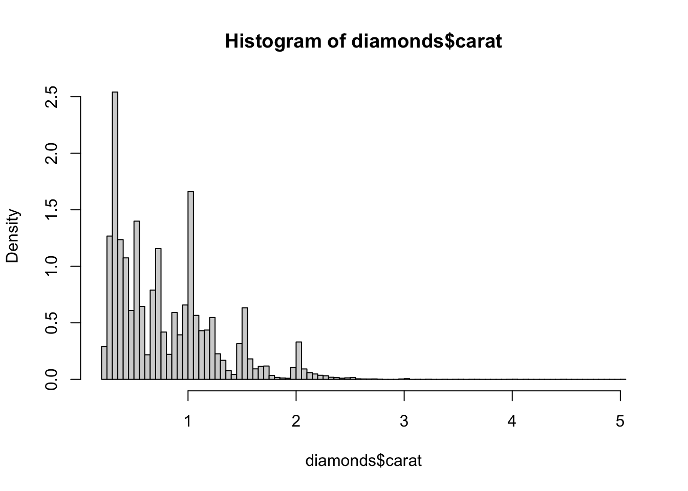
In this one, we see several distinct peaks (perhaps groups?), and very strong skewness. We can try density estimation with different bandwidths
hist(diamonds$carat,breaks=100,freq=FALSE)
d1 <- density(diamonds$carat, bw=1)
lines(x=d1$x, y=d1$y, col='red', lwd=2)
d2 <- density(diamonds$carat, bw=0.5)
lines(x=d2$x, y=d2$y, col='green', lwd=2)
d3 <- density(diamonds$carat, bw=0.1)
lines(x=d3$x, y=d3$y, col='blue', lwd=2)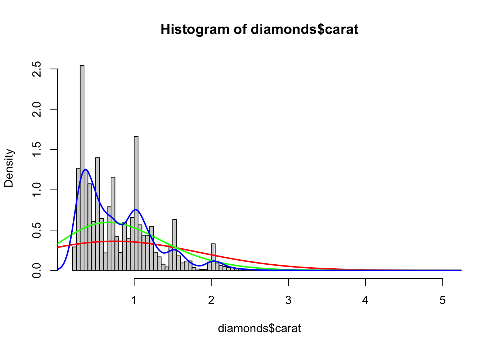
We can also let R decide the optimal bandwidth
hist(diamonds$carat,breaks=100,freq=FALSE)
bw.nrd0(diamonds$carat)[1] 0.04826685d4 <- density(diamonds$carat)
lines(x=d4$x, y=d4$y, col='orange', lwd=2)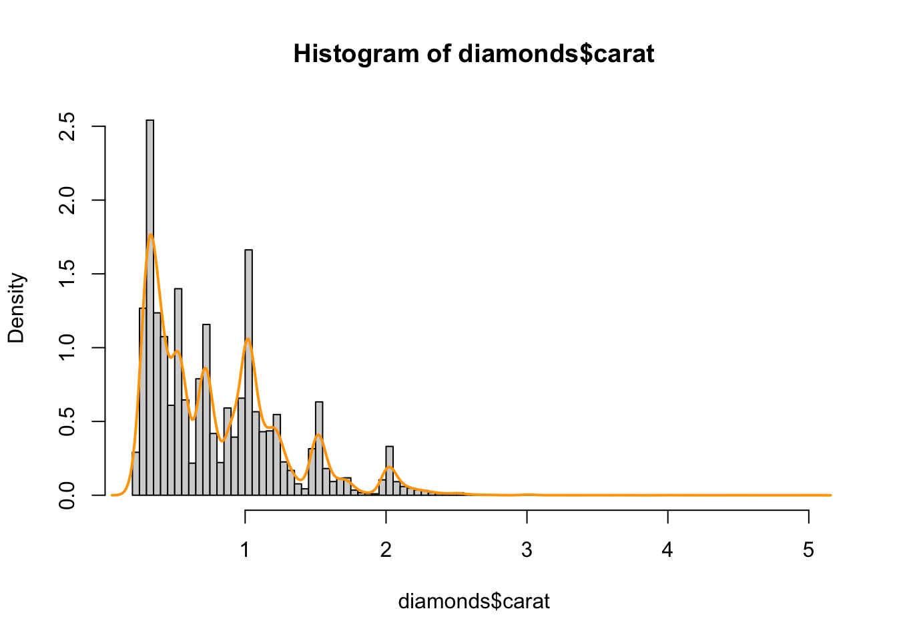
As for the variable price, the code is the same as above
hist(diamonds$price,breaks=100,freq=FALSE)
d4 <- density(diamonds$price)
lines(x=d4$x, y=d4$y, col='red', lwd=2)
we see here fewer peaks, but still an unusual structure and strong skewness.
Task 3b
-
How many diamonds are there of the different
cuts? -
How does the distribution of prices change according to the
cutof the diamond? -
Try drawing boxplots for each level of
cut. - How do these compare to violin plots? And ridgeline plots?
- Do you find any evidence of different behaviour among the groups?
-
Perform a similar investigation of the diamond’s
carat.
Click for solution
barplot(xtabs(~cut,data=diamonds))
A histogram shows wide variation in numbers for the different groups of cuts.
boxplot(price~cut, data=diamonds)
The distribution is very skewed in all cases. There is a slight variation in medians, and more obvious variation in the upper inter-quartile range. There are lots of candidates for outliers! Butthis is just a side-effect of a big and skewed data set. Without further information, they seem very unlikely to be due to error. Let’s look at the violin plots
ggplot(diamonds,
aes(x = factor(cut), y = price)) +
geom_violin(fill = "lightBlue")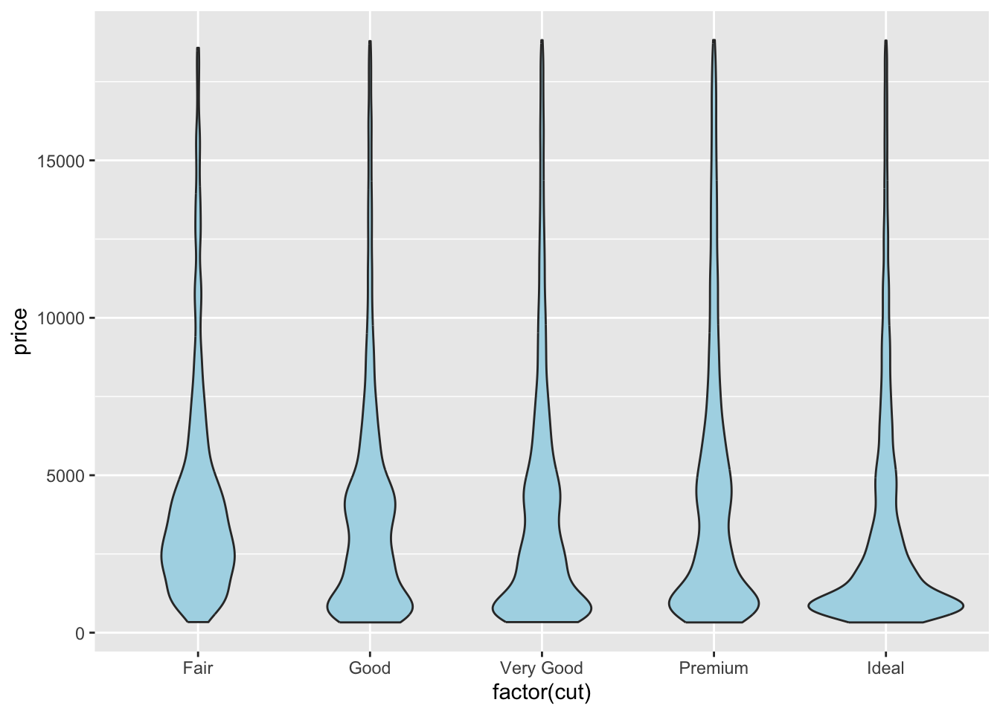
Here skewness is apparent again. We can also notice how the shape changes as we go from Fair to Ideal. All groups prices peak around low values. And here are the ridge plots
ggplot(diamonds, aes(price, y=factor(cut), fill=cut)) +
geom_density_ridges(scale = 1.5)Picking joint bandwidth of 458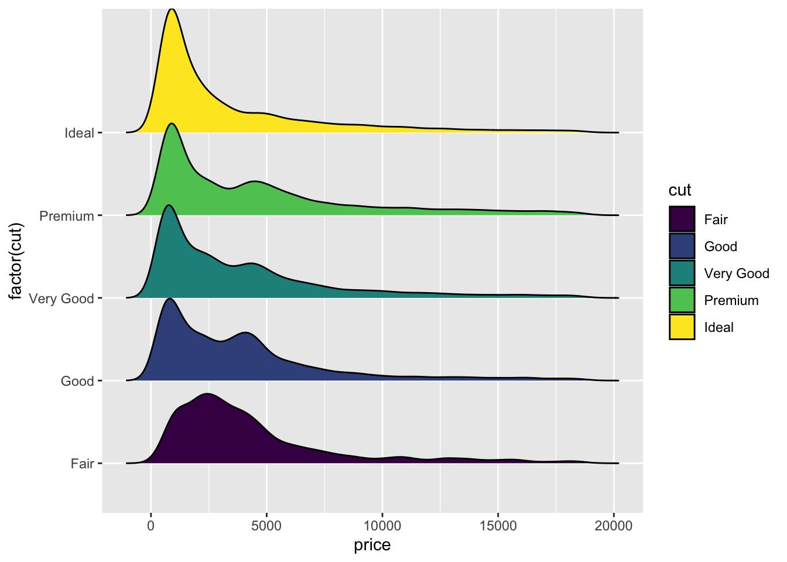
Task 3c
-
Draw plots to show how
pricechanges according to thecolorof the diamond. -
Perform a similar investigation of the diamond’s
caratwithclarity. - What conclusions do you draw?
Click for solution
Here again, the best is to start with boxplots
boxplot(price~color, data=diamonds)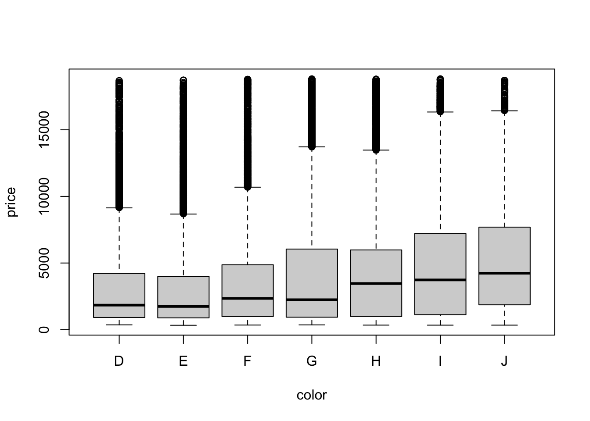
We see a similar shape as before, but the median is clearly increasing as we go from D to J.
ggplot(diamonds,
aes(x = factor(color), y = price)) +
geom_violin(fill = "lightBlue")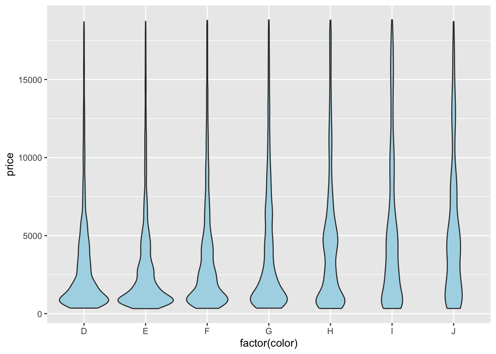
From the violin plots, we see that the distribution is becoming flatter as D->J.
ggplot(diamonds, aes(price, y=factor(color), fill=color)) +
geom_density_ridges(scale = 1.5)Picking joint bandwidth of 535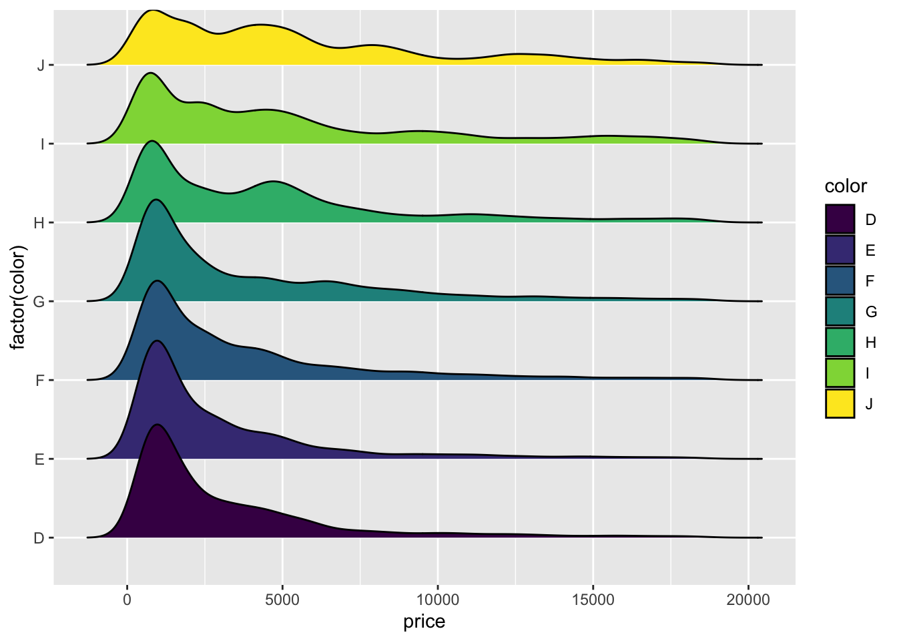
And as before the ridge plots are easier to interpret: the distribution is more spread out with more ‘humps’ for colours H-J. This is what drags up the median.
In the case of carat vs clarity, we repeat the procedure
boxplot(carat~clarity, data=diamonds)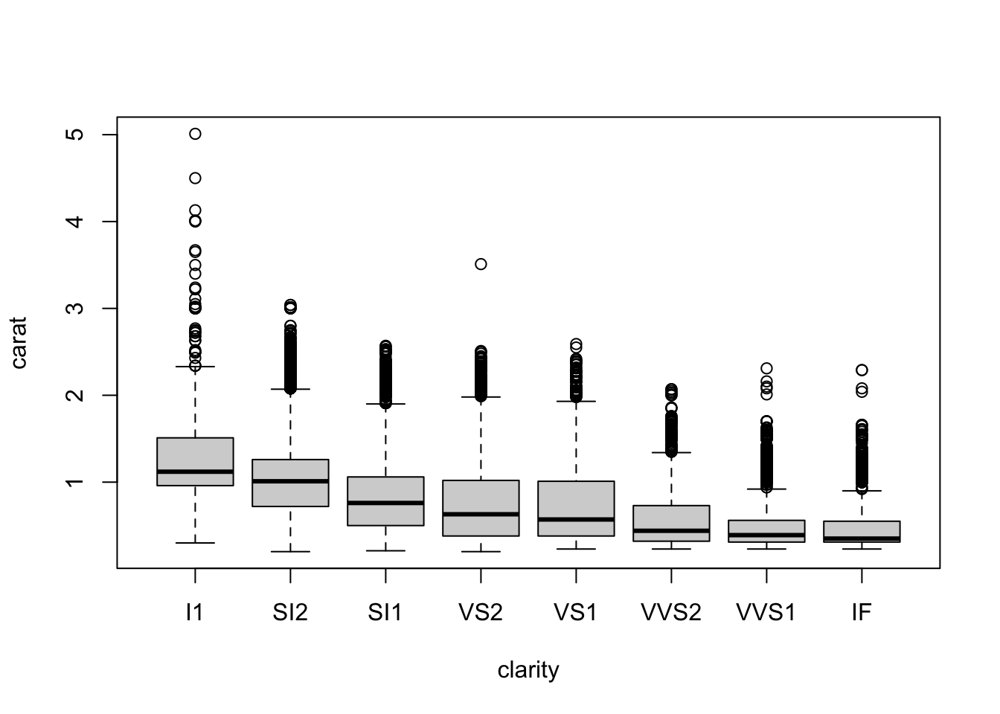
getting the “reverse” picture: going from left to right, the carat clearly drops.
ggplot(diamonds,
aes(x = factor(clarity), y = carat)) +
geom_violin(fill = "lightBlue")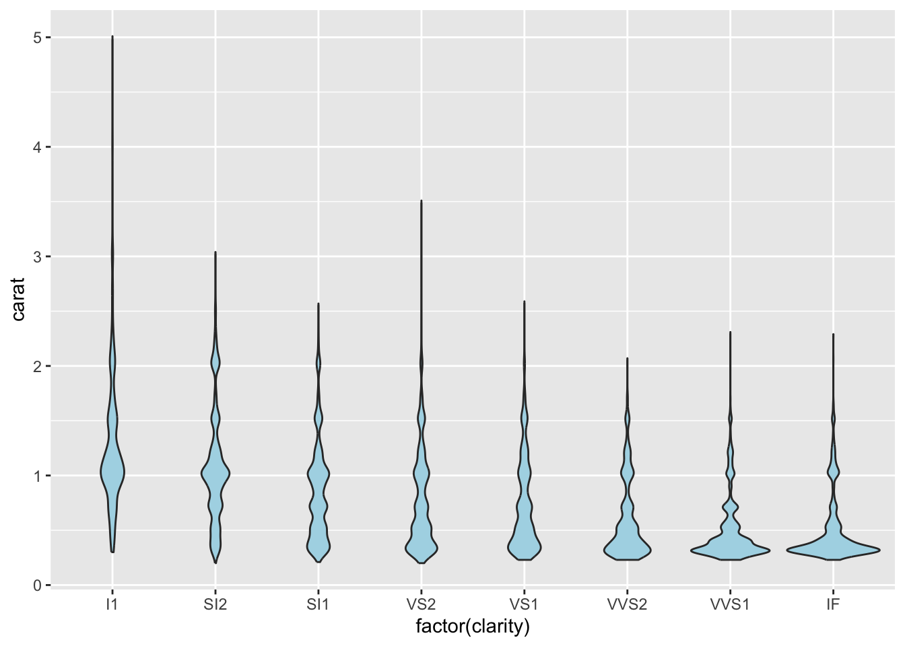
Violin plots show a shape that is definitely changing. The distribution is more spread on the left, and more concentrated on the right.
ggplot(diamonds, aes(carat, y=factor(clarity), fill=clarity)) +
geom_density_ridges(scale = 1.5)Picking joint bandwidth of 0.057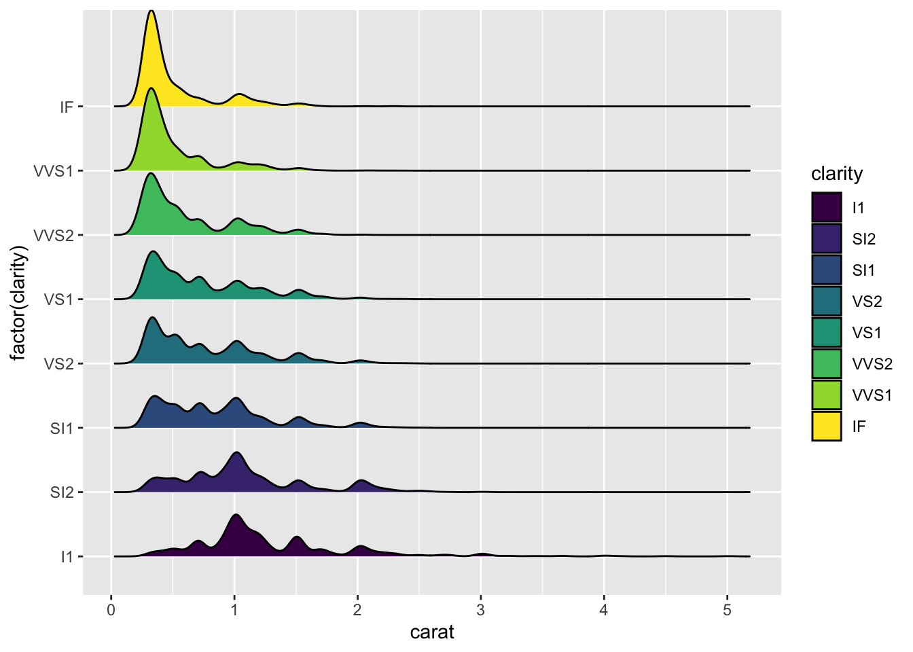
2D Density estimation (optional)
The ideas of density estimation can be extended beyond one dimension. If we consider two variables at once, we can estimate their 2-d joint distribution as a smoothed version of a scatterplot. This also provides another alternative method of dealing with overplotting of dense data sets.
Let’s return to the Old Faithful data:
library(MASS) ## this is a standard package, you shouldn't need to install it
data(geyser)
plot(x=geyser$duration, y=geyser$waiting,
xlab='duration', ylab='waiting', pch=16)
A 2-D density estimate would smooth the distribution into a surface, picking out two or three peaks corresponding to the clumps in the data. We can fit the 2-D density using the kde2d function from the MASS package. It has few arguments, just the x and y to be smoothed, and an optional n which controls the amount of detail in the resulting smoothed density.
k1 <- kde2d(geyser$duration, geyser$waiting, n = 100)The output of kde2d is a bit more complicated than we get from a 1-D density estimation. It’s now a list with x, y, and z components. The x and y components are the values of the specified variables (here, duration and waiting respectively) which are used to create a grid of points. The density value at every combination of x and y is then estimared and returned in the z component.
The value of n here indicates the number of grid points along each axis, effectively acting as an “inverse bandwidth”. Increasing this will give you smoother output due to making more estimates in a bigger z matrix, but will take longer to evaluate.
We can then add the smoothed density to our scatterplot as contours:
plot(x=geyser$duration, y=geyser$waiting,
xlab='duration', ylab='waiting', pch=16, col=alpha('black',0.6))
contour(k1, add=TRUE, col='blue')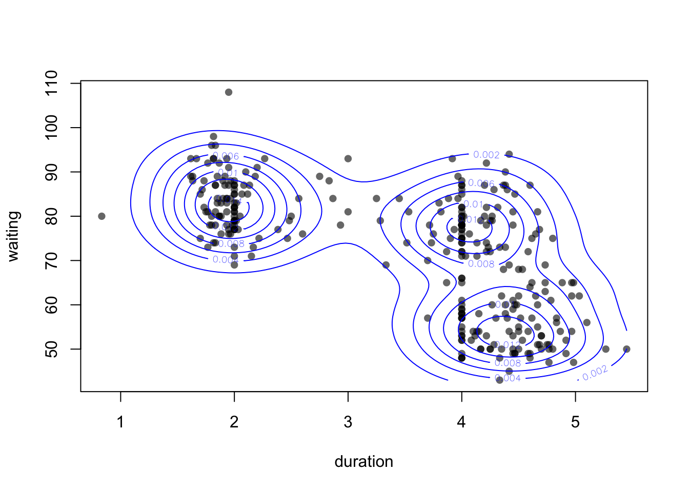
Using add=TRUE we can draw the contours on top of an existing plot. See the help on contour (?contour) for more ways to customise.
Alternatively, we could skip the scatterplot and just draw the contours (useful if we have too many points)
contour(k1, col='blue')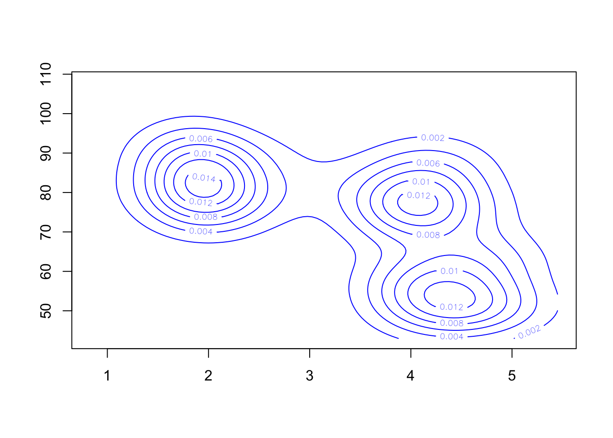
A different presentation of the density estimate is to draw the surface as a heatmap:
image(k1)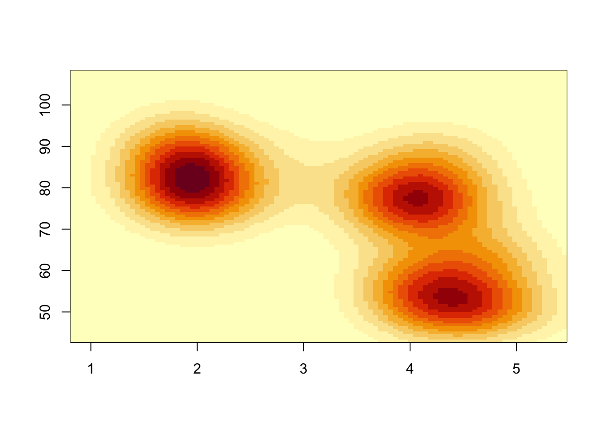
Each rectangular region in the plot is now coloured according to the density estimate. The heatmap is a little blocky due to the resolution of our density estimate. Specifying n=100 divides each axis into 100 intervals, giving us 10,000 2-D bins over the range of the data. Like a histogram, we can increase n to see more detail - though it can take a little while to compute.
If we want to overlay the data points, we can use the points function:
image(kde2d(geyser$duration, geyser$waiting, n = 500),
xlab='duration', ylab='waiting')
points(x=geyser$duration, y=geyser$waiting,pch=16, col=alpha('black',0.6))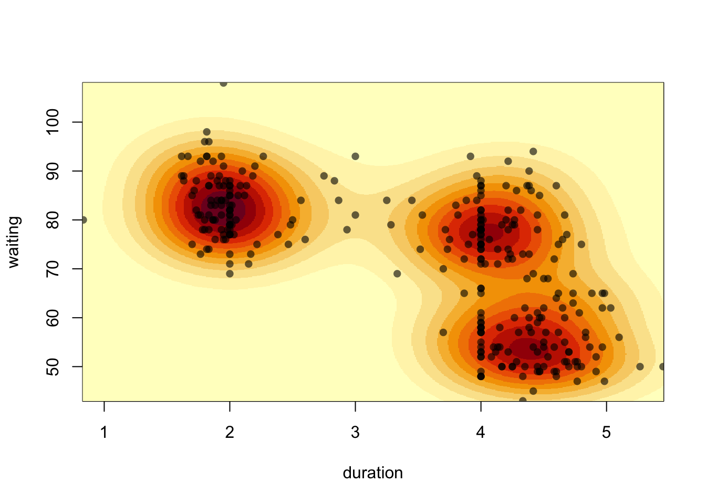
Hertzprung-Russell (optional)
Download data: HRstars
The Hertzsprung-Russell diagram is famous visualisation of the relationship between the absolute magnitude of stars (i.e. their brightness) and their effective temperatures (indicated by their colour). The Hertzsprung-Russell provides an easy way to distinguish different categories of stars according to their position on the plot.
We’re going to look at the HRStars data which contain 6220 stars from the Yale Trigonometric Parallax Dataset.
- Let’s start with single variables. Have a look at histograms of
VandBV. - Do you see any evidence of groups in the data? You’ll need to adjust the number of bars.
Univariate summaries can conceal a lot of information when the data are inherently multivariate. So, let’s consider both variables.
- Draw a plot of the magnitude
Vvertically against the observed colourBV. - The data contain a lot of points, so reduce your point size by scaling down the symbol size. This can be done by setting the optional argument
cexto a value between0and1- the default size is1. - What features do you see? Can you identify any groups in the data? Are there any outliers?
- The Sun has an absolute magnitude of 4.8 and B-V colour of 0.66. Use the
pointsfunction (it works exactly the same way aslines) to add it to your plot - use a different colour and/or plot character to make it stand out. - How does your plot differ from the plots you find on the web? How would you adjust your scatterplot to match?
The central ‘wiggle’ in the plot corresponds to main sequence stars. Below that wiggle are the white dwarf stars, and above are the giants and supergiants.
Fit a 2-D density estimate to the stars data.
Overlay the contours on your scatterplot (use a different colour and/or transparency).
The
kde2dfunction takes an argumenthwhich represents the bandwidth. We can supply a single value, or a vector of two values (one for each variable).The contour plot seems to miss out the less dense region of dwarf stars in the bottom left due to the low density of points. The default number of contours drawn is 10, and it is set by the
nlevelsargument. Increase the number of contours until a contour around the dwarf group is visible.Alternatively, you can pick the levels at which the contour lines are drawn by specifying a vector as input to the
levelsargument. I found that \(0.005, 0.01, 0.025, 0.05, 0.1, 0.15\) work well - try this now.Can you identify the main groups of stars?
This is more tricky and requires more R programming:
- Create a new categorical variable to that represents the values of the
Uncertvariable, which represents the parallax error in the observations. Use three levels:Uncertunder 50Uncertabove 50 but below 100Uncertabove 100
- Use your new variable to colour the points in your scatterplot according to this error.
- Is this parallax error associated with the properties (and hence types) of observed stars?
Pearson’s heights (optional)
Download data: fatherSon
This is another dataset of father and son heights, this time from Karl Pearson (another prominent early statistician). This time we have 1078 paired heights recorded in inches and were published in 1903. Families were invited to provide their measurements to the nearest quarter of an inch with the note that “the Professor trusts to the bona fides of each recorder to send only correct results.”
- Draw histograms of the sons’ and fathers’ heights (
sheightandfheight). Use a density scale and a bar width of 1 inch. - Compute a density estimate for both distributions.
- Draw the histograms side-by-side and overlay your density curves.
- Do the data look normally distributed?
We should be careful about jumping to conclusions here, or as Pearson put it in his 1903 paper: “It is almost in vain that one enters a protest against the mere graphical representation of goodness of fit, now that we have an exact measure of it.” For the time, he was justified in his demanding both graphical and analytical approaches. Since those early days, analytic approaches have often been too dominant, both are needed.
- Draw Normal quantile plots of the two variables side-by-side. Do the data look normal?
Let’s look at the pairwise relationship between the two heights.
- Draw a scatterplot of sons’ heights (vertically) against fathers’ heights (horizontally).
- Is there a strong association here? Calculate the correlation.
- Fit a linear regression (recall in ISDS, you used the
lmfunction). Add the line to your plot.
The height of a son is influenced by the height of the father, but there is a lot of unexplained variability. This scatterplot also illustrates a phenomenon known as regression towards the mean. Small fathers havs sons who are small, but on average not as small as their fathers. Tall fathers have sons who are tall, but on average not as tall as their fathers.
To explore further whether a non-linear model would be warranted, we could plot a smoother andt the best fit regression line together.
- Fit a smoother to the data.
- Add it to your plot with a 95% confidence interval.
- Are the regression and smoother in agreement?